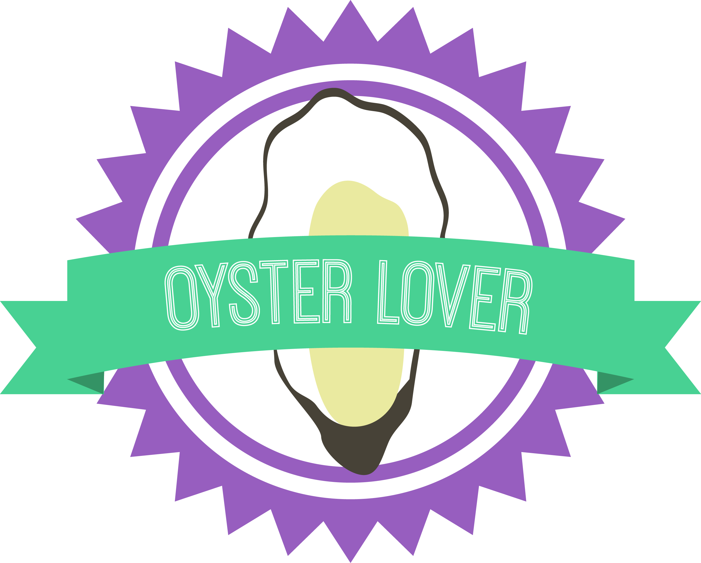

Home

Where to eat
How to cook
Findout
where you
can
pourchase
oyster in
Vancouver.
Find out where
you can pick
oyster in BC.
Where to eat
How to cook
Findout
where you
can
pourchase
oyster in
Vancouver.
Find out where
you can pick
oyster in BC.
Ingredients :
1 dozen oysters (on the half shell)
½ c. of finely chopped green onions
½ c. of finely chopped fresh ginger
2 cloves of finely chopped garlic
½ c. of butter
Salt & pepper to taste
Directions
1. Melt butter & then add ginger, garlic, onions, salt, and pepper to melted butter mixture.
2. Steam oysters in another larger pot for 10minutes.
3. When oysters have been steamed, add 1 tbsp. of mixture to each individual oyster & serve hot.
The Baynes Sound Recreational Shellfish Reserve is located on the south side of Baynes Sound parallel to the Island Highway.
This shellfish reserve is a productive beach covering approximately 14 hectares supporting an abundance of shellfish species.
Before You Harvest:
1. You must check for shellfish closures by calling
1-866-431-3474 or check online closure notices.
2. You are harvesting in Area 14-15 and 14-8
You must have a valid Tidal Water Sport Fishing Licence.